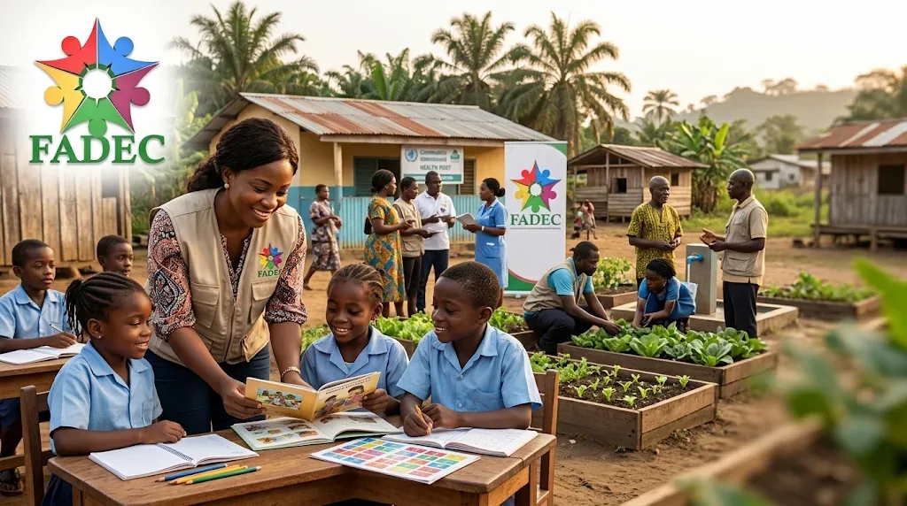
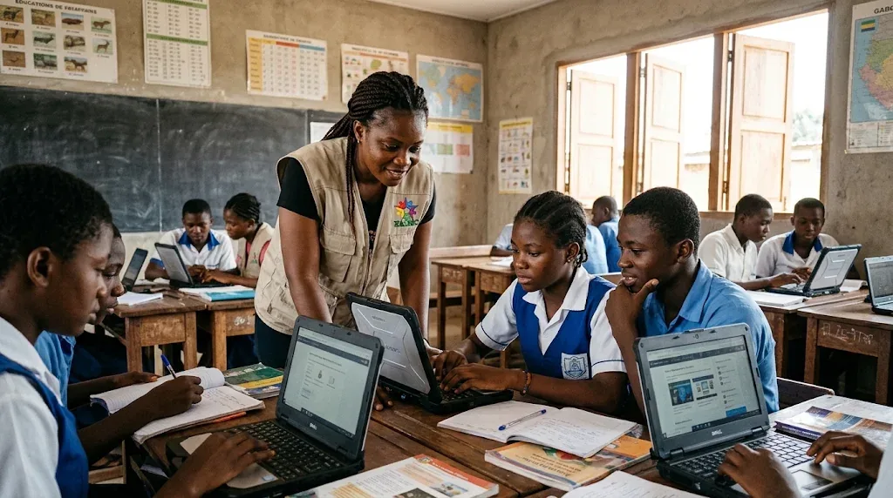
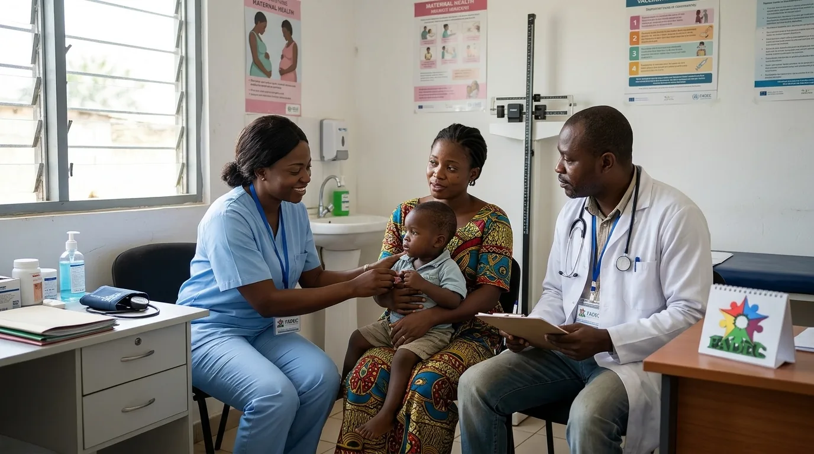
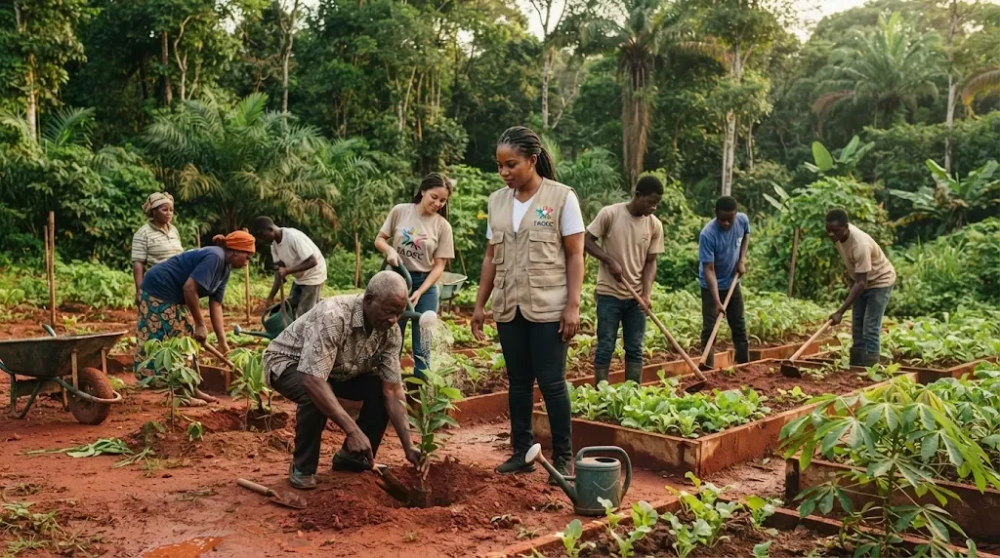
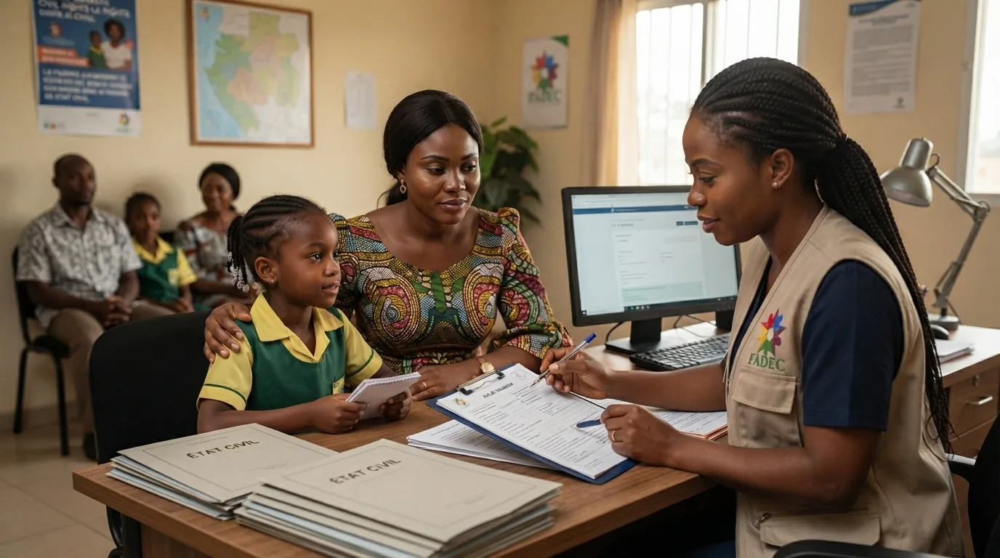
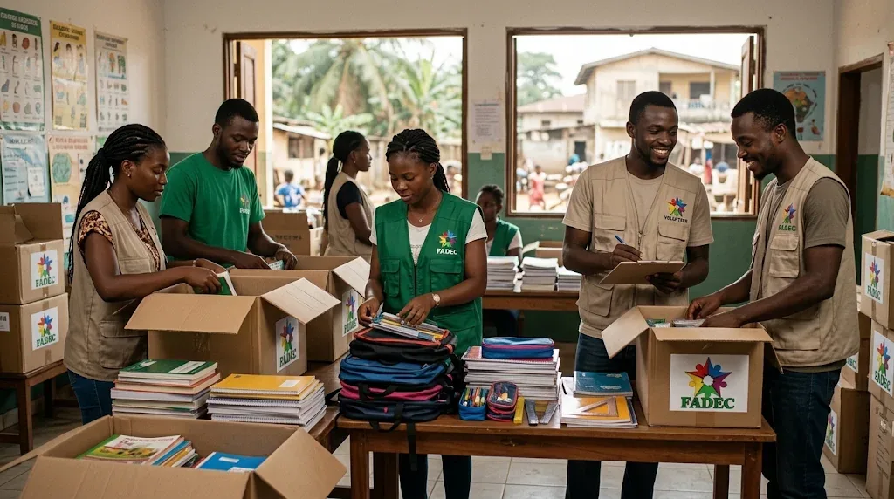
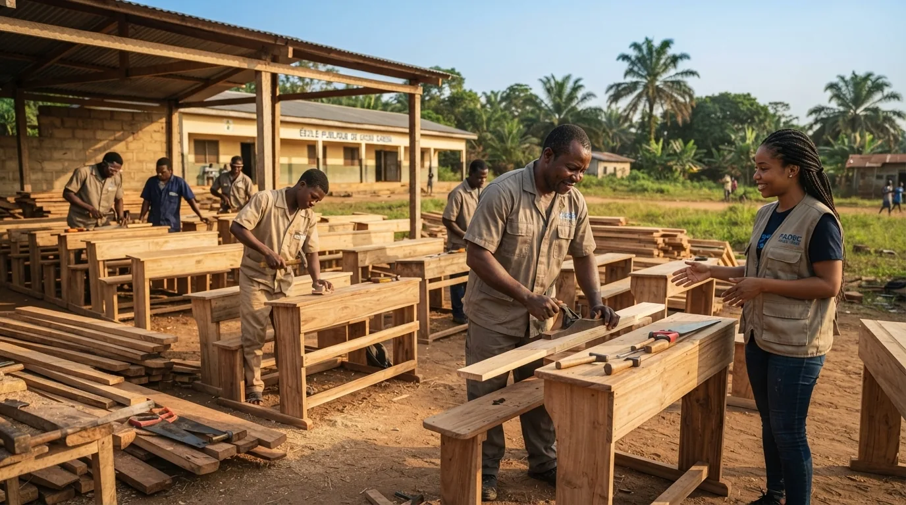
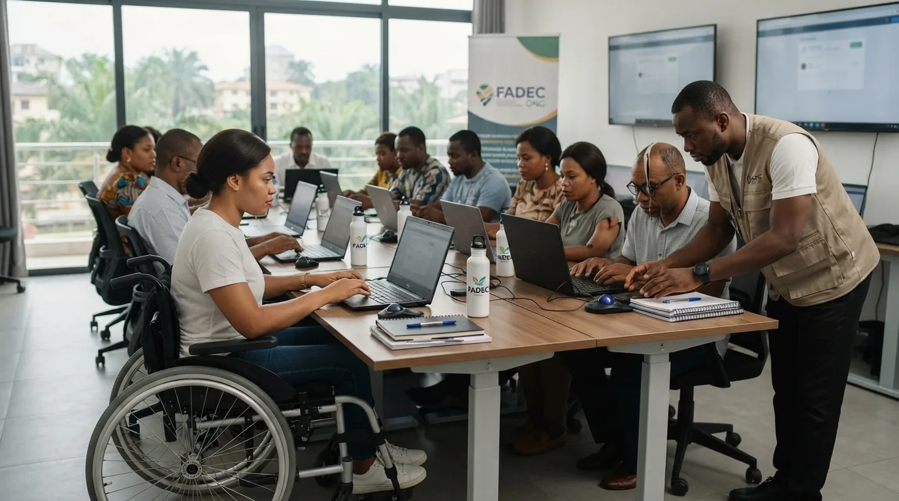
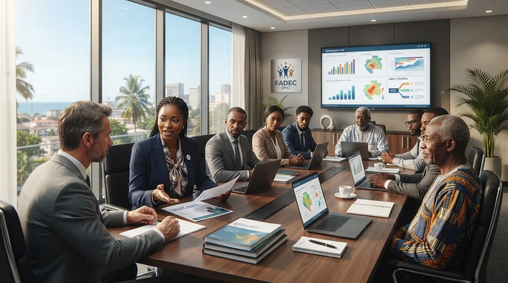

Agir pour l’humain.
Transformer demain.
Un engagement collectif pour renforcer les communautés, ouvrir de nouvelles perspectives et faire grandir des initiatives durables.
Une conviction : le changement se construit ensemble.
Une organisation.
Une vision.
Un impact humain.
Nous croyons en la capacité de chaque communauté à inventer son avenir lorsqu’elle dispose d’opportunités, de soutien et de moyens d’action.
FADEC ONG œuvre à la promotion de l’assistance, de la formation et du développement communautaire. Ses initiatives s’inscrivent dans une démarche de proximité et de mobilisation citoyenne.
Découvrir notre organisation ↗Des engagements.
Des perspectives.
Nos domaines d’intervention répondent à un objectif commun : contribuer à des communautés plus fortes, plus autonomes et mieux accompagnées.
« Le développement durable se construit avec les communautés, jamais sans elles. »UNE AMBITION PARTAGÉE
L’action au cœur
de notre engagement.
Quelques programmes issus des archives publiques de FADEC. Leurs résultats et leur situation actuelle seront vérifiés avec l’organisation.
Un Gabonais,
un acte de naissance.
Une initiative de sensibilisation et d’accompagnement autour d’un droit essentiel : l’existence juridique et l’accès à l’identité.
En savoir plus ↗Votre engagement
peut tout changer.
Donner de son temps, apporter son expertise ou devenir partenaire : chaque contribution peut faire avancer une initiative collective.
Les histoires
qui nous rassemblent.
Retrouvez les initiatives et les archives de l’organisation. De nouvelles actualités seront publiées après validation par FADEC.
Des communautés. Des talents. Un avenir partagé.
Une collection de visuels illustrant les principaux engagements de FADEC ONG.









Visuels générés par intelligence artificielle, à vocation illustrative. Ils ne constituent pas des photographies documentaires des activités réalisées par FADEC.